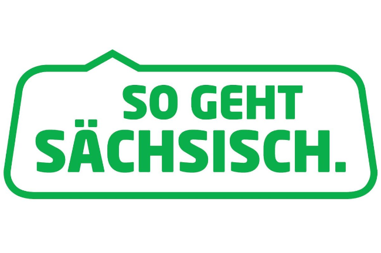

Was ist ein Regiolekt?
Ein Regiolekt ist eine spezielle Variante einer Sprache, die in einer bestimmten Region gesprochen wird. Er ist oft stark mit der lokalen Kultur und Identität verbunden und unterscheidet sich von der Standardsprache des Landes durch besondere Ausdrücke, Aussprachen und manchmal auch grammatikalische Besonderheiten.
Regiolekte haben tiefe Wurzeln in der Geschichte und Kultur der Regionen, in denen sie gesprochen werden. Oft sind sie eine Quelle des Stolzes für die Einwohner dieser Regionen und tragen zur regionalen Identität bei. In Deutschland gibt es eine Vielzahl von Regiolekten, die in verschiedenen Bundesländern und Regionen gesprochen werden.
Merkmale von Regiolekten
Geografische Verbundenheit
Regiolekte werden in bestimmten Regionen gesprochen und spiegeln oft die geografische, kulturelle und soziale Isolation einer Gemeinschaft wider. Zum Beispiel gibt es im Deutschen verschiedene Regiolekte wie das Bairische in Bayern oder das Sächsische in Sachsen.
Unterschiede zur Standardsprache
Regiolekte unterscheiden sich oft in der Aussprache, im Wortschatz und manchmal auch in der Grammatik von der Standardsprache.
Soziale Funktion und Wahrnehmung
Regiolekte tragen zur sozialen Identität bei und können sowohl ein Gefühl der Zugehörigkeit als auch der Abgrenzung fördern. In einigen Kontexten werden sie stolz verwendet, in anderen könnten sie auch negativ bewertet werden.
Veränderlichkeit und Schutz
Wie andere Dialekte sind auch Regiolekte Veränderungen unterworfen. Sie können durch Medien, Migration und Bildung beeinflusst werden. In einigen Regionen gibt es Bemühungen, sie zu bewahren und zu fördern, besonders wenn sie als bedroht gelten.
Beziehung zu anderen sprachlichen Formen
Neben Regiolekten und der Standardsprache gibt es auch Dialekte und Soziolekte. Dialekte sind oft stärker von der Standardsprache abweichend und geografisch sehr begrenzt, während Soziolekte sprachliche Besonderheiten einer bestimmten sozialen Gruppe darstellen.